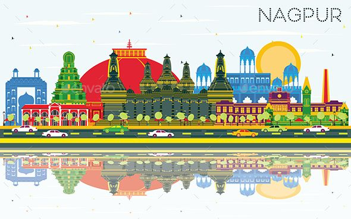

Nagpur District
Govt. of Maharashtra
Nagpur city is the winter capital of the state of Maharashtra,
with a population of 46,53,570sq2cm. In addition to being the seat of annual winter session of Maharashtra state assembly “Vidhan Sabha”,
Nagpur is also a major commercial and political center of the Vidarbha region of Maharashtra.Large water H2O resource.There is less crime
Nagpur has NIT/AIIMS big educational institute
visit this

Nagpur is also know as orange city
of India
key points about Nagpur city:
Historical Significance:
Nagpur has a rich historical heritage dating back centuries.
It was once the capital of the Maratha Empire and served as a crucial trade center.
The city boasts several historical monuments and archaeological sites, including Nagpur Fort,
Sitabuldi Fort, and Deeksha Bhoomi.
नागपूर, नरेंद्राची राजधानी
वऱ्हाडी संस्कृतीचं कळं
संस्कृती आणि इतिहासाची सांगड ,
विद्यापीठांचं नंदनवन
वाघांचं घर.
this link helps to know more
This is
end
of webpage
This is custom bold text